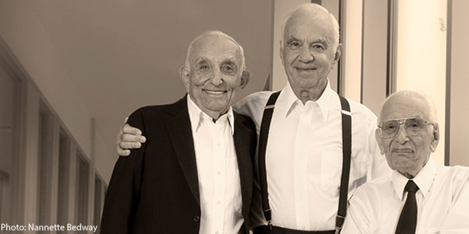

קרן ג'ק, ג'וזף ומורטון מנדל אישרה שורה של מענקים בהיקף כולל של 1,750,000 דולר, שתעניק הקרן המיוחדת של קרן מנדל בישראל לשם התמודדות עם מגפת הקורונה. מענקים אלו הם המשך לסיוע שהגישה הקרן באביב – מענקים בסך כולל של 5 מיליון דולר.
בסבב המענקים הנוכחי יקבלו סיוע ארבעה-עשר ארגונים ואוניברסיטאות. הם יכללו סוגים שונים של סיוע חירום וטיפול למשפחות וליחידים. כמו כן יוענקו מענקים לכמה אוניברסיטאות, כדי לאפשר להן לסייע לסטודנטים בתחום מדעי הרוח ולמנוע את נשירתם.
המענקים יתואמו באמצעות קרן מנדל-ישראל ויוענקו לארגונים האלה:
- הקרן לירושלים, 250,000 דולר לסיוע חירום לתושבי העיר: אספקת מזון לנזקקים, פתרונות לילדים בסיכון ותמיכה במקלטים לנשים ולמשפחות
- קרן אילת, 200,000 דולר לסיוע למשפחות שאיבדו את הכנסתן
- האוניברסיטה העברית בירושלים, 150,000 דולר לסיוע לסטודנטים למדעי הרוח כדי למנוע את נשירתם בשל בעיות הקשורות בנגיף הקורונה
- אוניברסיטת תל אביב, 150,000 דולר לסיוע לסטודנטים למדעי הרוח כדי למנוע את נשירתם בשל בעיות הקשורות בנגיף הקורונה
- אוניברסיטת בן-גוריון בנגב, 150,000 דולר לסיוע לסטודנטים למדעי הרוח כדי למנוע את נשירתם בשל בעיות הקשורות בנגיף הקורונה
- קרן ירוחם החדשה, 150,000 דולר כדי לאפשר למערכת החינוך בירוחם לקיים שיעורים ולגייס מורים נוספים
- בית לכל ילד, 150,000 דולר לטיפול ולסיוע לילדים קורבנות אלימות במשפחה
- בצלאל אקדמיה לאמנות ועיצוב ירושלים, 100,000 דולר לסיוע לסטודנטים למדעי הרוח כדי למנוע את נשירתם בשל בעיות הקשורות בנגיף הקורונה
- ער"ן, 100,000 דולר למתן סיוע רגשי לאוכלוסיות נזקקות
- כפר נהר הירדן, 100,000 דולר לסדנאות ופעילויות לילדים המתמודדים עם מחלות קשות
- אלין בית נועם, 100,000 דולר לסיוע למבוגרים עם צרכים מיוחדים שמצבם החמיר בגלל נגיף הקורונה
- קרן בנג'י הילמן, 50,000 דולר לחיילים בודדים שאין להם משפחה בישראל
- מכללת ספיר, 50,000 דולר לסיוע לסטודנטים למדעי הרוח כדי למנוע את נשירתם בשל בעיות הקשורות בנגיף הקורונה
- מרכז צומת ירושלים, 50,000 דולר לתוכניות מניעה והתערבות חיוניות לבני נוער ולצעירים דוברי אנגלית בישראל
קרן ג'ק, ג'וזף ומורטון מנדל פועלת בישראל זה שלושים שנה, ומשכנה בירושלים. עד היום השקיעה הקרן בישראל יותר ממיליארד שקלים וחצי. הקרן מפעילה תוכניות מנהיגות במסגרת יחידותיה: בית ספר מנדל למנהיגות חינוכית, מכון מנדל למנהיגות, מרכז מנדל למנהיגות בנגב ומרכז מנדל למנהיגות בצפון. תרומה זו מצטרפת לתרומות הרבות של הקרן לאורך השנים, המבטאות את מחויבותה לרווחת החברה בישראל ולמדינת ישראל כמדינה יהודית ודמוקרטית.

{kind=link}